Common Parameters
Amount
The Amount parameter is a master mixer that controls the animation of all image changes applied by the effect. Use this single slider to animate between the original, unaffected image and the full effect.
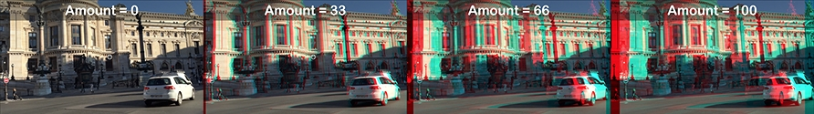Amount parameter on Anaglyph
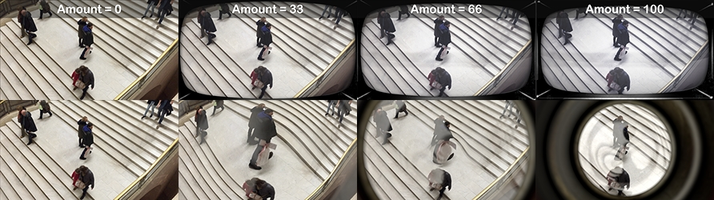Amount parameter on Bad Monitor
Random Pattern
Because the effects are procedural, each clip will get a unique look. Use the Random Pattern parameter to cycle through different variations until you find one you like.
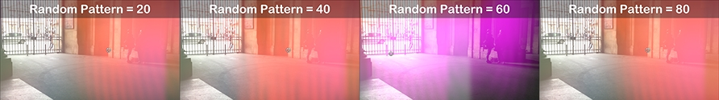Random Pattern on Flashed
Effects
Anaglyph
Parameters: Scale, Random, Random Frequency, Mask Edges, Overlay Original.
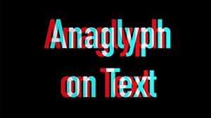Bad Monitor
Features customizable frame images for the monitor border.
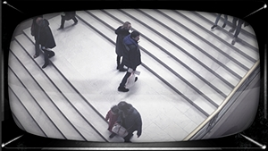 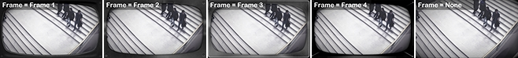Custom frame options
Light Flare
Includes a Clamp To Edges parameter.
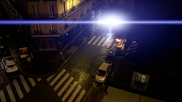Light Wash
Features a Color Variety control for adjusting the wash.
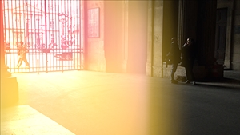Sprockets
Film sprocket hole overlay effect.
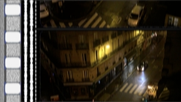Generators
Cue Dot
Apply as a connected clip. Set duration to 4 frames for an authentic look.
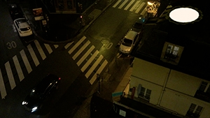 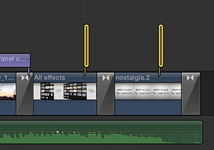Cue Dot in timeline
Leader
Includes a Writing parameter for inserting custom text.
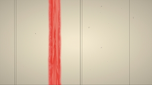Mix Tape
Features a Progress parameter that controls the tape rolling animation.
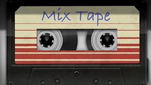Vinyl
Label controls for customizing the artwork display.
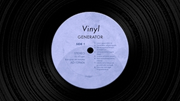Gate
A procedural generator with FPS and Tape parameters for controlling playback speed and appearance.
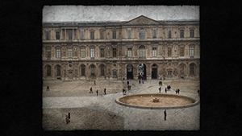 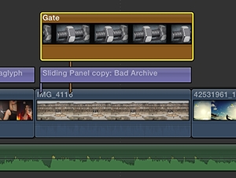Gate generator in timeline
Transitions
Splice
Film splice transition effect.
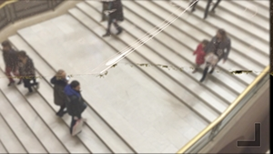Unplugged
Signal loss transition effect.
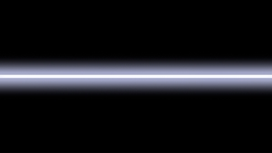Applying Templates
- Select one or more clips or edit points, then double-click the desired template.
- Drag templates directly from the browser to the timeline.

Select and double-click
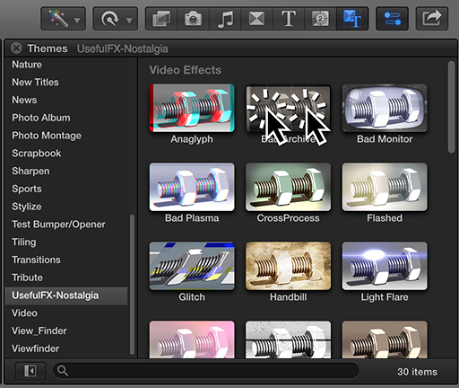Drag to timeline
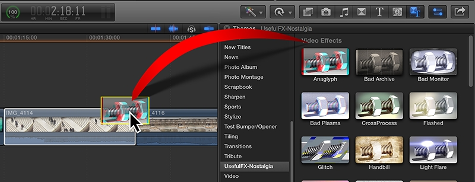Applied in timeline
Tip: Access all Nostalgia content through the Themes Browser rather than separate browsers for the best experience.